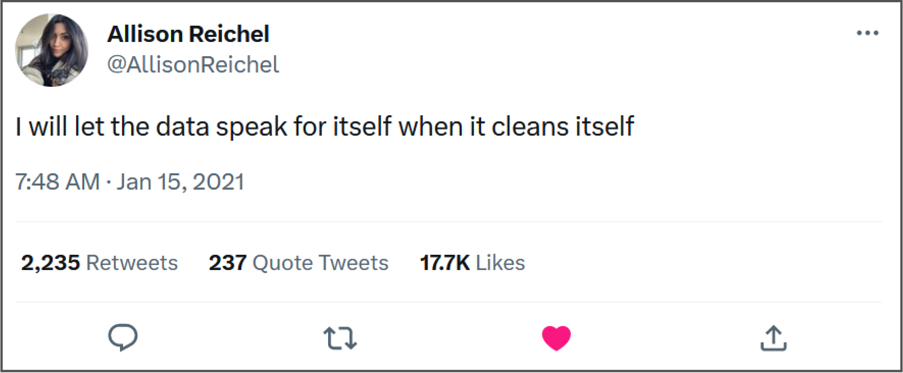

Learn R now!!! Or triple your money back!
Julia Piaskowski
3/7/23
ASM 240 Computer Applications in Biophysical Systems
(3 credits)
This course is designed as an introductory course to computer applications with specific emphasis on applications used in agriculture and life sciences. Content includes spreadsheet management, database management, data analysis, data visualization, and presentation applications. Recommended preparation: three credits of college math. Two lectures and one 2-hour lab per week.

What is R?
R is a free software environment for statistical computing and graphics.
R is a programming language for statistical computing and graphics…. –Wikipedia
Data Analysis
- math calculations
- statistical analysis
- deep learning
- natural language models
- GIS and spatial applications
R has a solution for everything.
What Can R do?
- comprehensive set of standard math functions
- 20k+ contributed packages
Data Preparation
Rarely is data ready to use after the initial acquisition.
Data preparation
- remove impossible values
- find out why there are so many duplicates!
- “name disambiguate” (e.g. J. Piaskowski, Julia Piaskowski, Julia L. Piaskowski, Dr. Piaskowski, JL Piaskowski, …)
- tidyverse - suite of packages to do this!
Data preparation is time consuming

Connect with data sources
- internal or external database
- packages for connecting to any API: httr, jsonlite
- packages for working with specific API, e.g. rnassqs for accessing data from NASS ‘Quick Stats’ or spotifyr for accessing Spotify’s API
Static data visualization
Dynamic data visualization
gganimate package for creating gifs
 (
(Web apps
Write & publish reports
- Includes narratives: introduction, discussion, conclusion, etc
- Use R code to run analysis and output results and/or illustrative plots
- Embed mathematical equations, images, tables of results, diagrams
- Example
Interactive data visualizations
plotly example
Build & publish tutorials online
Build websites
- example 1
- example 2,
- example 3
- so many options: quarto, blogdown + hugo
R in agriculture
- widely used in agronomy, crop science, and soil science
- precision ag: uses some R and python
- animal science: SAS
- agricultural econ: python, point-and-click software
- weed science, plant pathology, entomology: R & SAS
- agricultural packages in R
How to learn R
- Invest time + effort. This is hard! It will take a concerted effort to learn it.
- Many free resources out there:
- my curriculum!
- other options